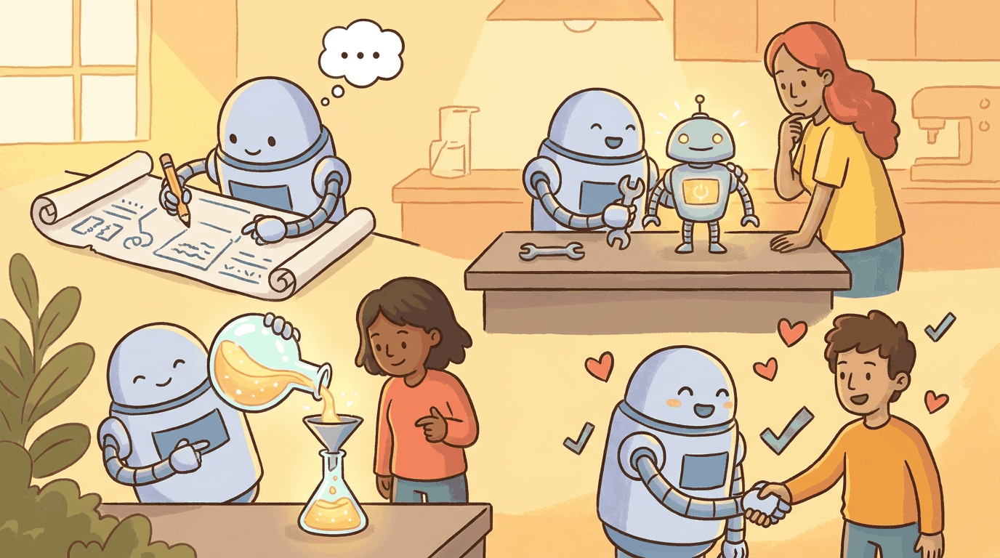

a Kurzgesagt-meets-XKCD visual metaphor with friendly characters and clear iconography, capturing the theme: Generating data, fine-tuning models, distilling knowledge, and aligning with human pref..."Give me a lever long enough and a fulcrum on which to place it, and I shall move the world."
Archimedes
Part Overview
Part IV is the heart of the book for practitioners who want to customize LLMs. You will learn to generate synthetic training data, fine-tune models (full and parameter-efficient), distill large models into smaller ones, merge model weights, and align models with human preferences via RLHF and DPO. This is the most technically dense part of the book; take your time with the labs.
Chapters: 5 (Chapters 13 through 17). Builds on API and prompting skills from Part III and supplies the trained models used in Part V and beyond.
Off-the-shelf models only get you so far. Part IV teaches you to bend LLMs to your needs through synthetic data, fine-tuning, distillation, and alignment, turning general-purpose models into specialized tools you can trust.
Using LLMs to generate training data: Self-Instruct, Evol-Instruct, persona-driven generation, quality assurance, LLM-assisted labeling, weak supervision, and avoiding model collapse.
End-to-end fine-tuning: data preparation, training configuration, hyperparameter selection, monitoring, evaluation, and when fine-tuning is (and is not) the right approach.
Adapting LLMs without updating all parameters: LoRA, QLoRA, adapters, prefix tuning, and prompt tuning. Practical guidance on choosing methods and managing multiple adapters.
Creating smaller, faster models: knowledge distillation from teacher to student, model merging techniques (TIES, SLERP, DARE), and practical recipes for building optimized models.
What Comes Next
Continue to Part V: Retrieval and Conversation. Fine-tuning lets you specialize a model; retrieval lets you ground it in your documents. You will build vector databases, design RAG pipelines, and develop conversational systems with memory and multi-turn dialogue management.